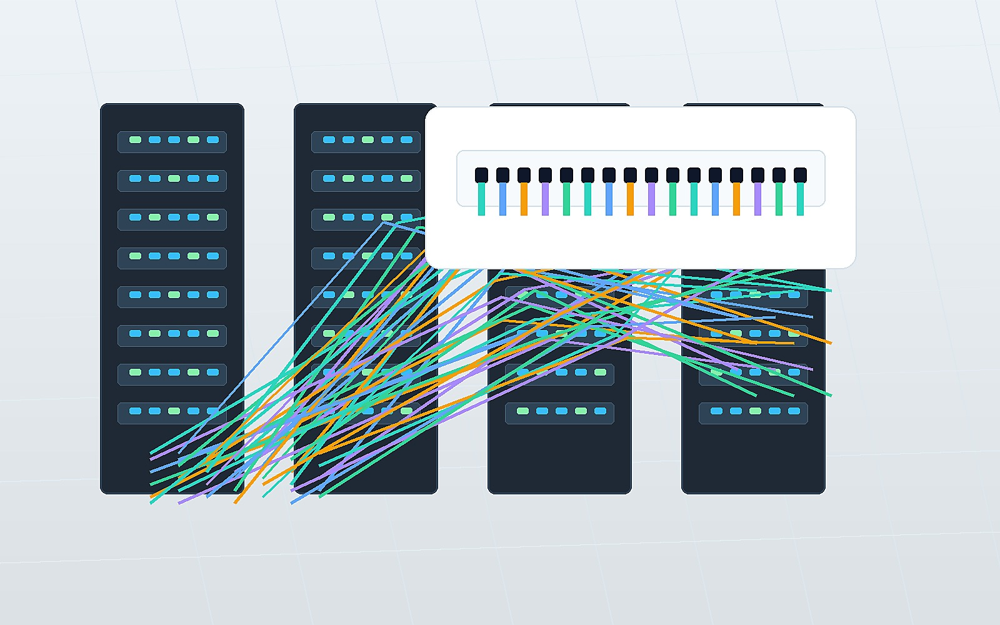
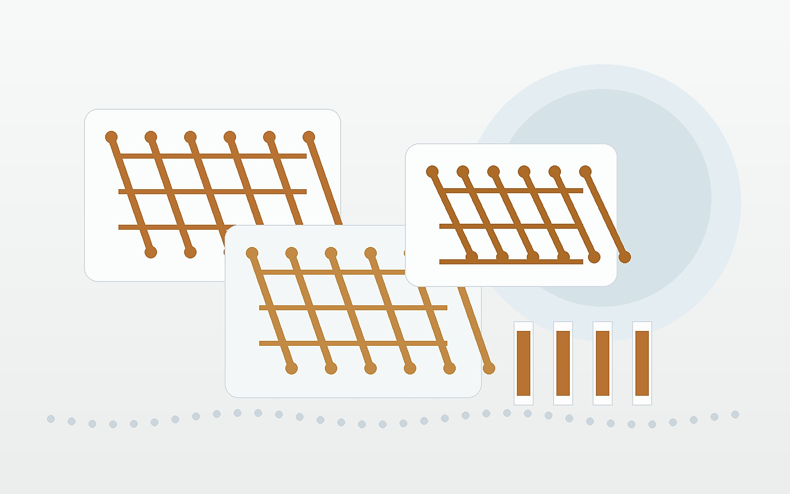

AlN Ceramic Substrates
High thermal conductivity substrates for LED, laser diode, power electronics, and RF modules.
AI infrastructure materials from China
We help overseas buyers source qualified MPO/MTP fiber trunk cables, AlN and Al2O3 ceramic substrates, DBC ceramic copper substrates, and AlN DPC ceramic PCBs from vetted Chinese manufacturers.
Primary product line
Our first supply focus is low-loss, high-density MPO/MTP fiber cabling for data center contractors, network integrators, GPU cluster builders, and high-density cabling projects.

Advanced materials line
We are building a qualified supplier pool for ceramic substrate projects where thermal conductivity, electrical insulation, metallization quality, and document traceability matter.
High thermal conductivity substrates for LED, laser diode, power electronics, and RF modules.
Cost-effective alumina substrates, insulating plates, and precision-cut ceramic bases.
Direct bonded copper substrates for power modules, IGBT, SiC, EV, and inverter projects.
Metallized ceramic PCB prototypes with Gerber-based quotation and surface finish options.

How RFQs are handled
We identify the product family, usage environment, required standards, and critical parameters.
Supplier capability, documentation, sample policy, tax invoice ability, and lead time are checked.
Quotes are organized with specification assumptions, missing questions, sample options, and next steps.
RFQ checklist
Fiber type, fiber count, connector, polarity, gender, length, jacket, insertion loss grade, quantity.
Material, size, thickness, metallization, copper thickness, surface finish, Gerber files, quantity.
Contact
For new projects, send drawings, Gerber files, sample photos, target specifications, or current supplier issues. We will respond with the missing questions and a practical supplier-matching path.